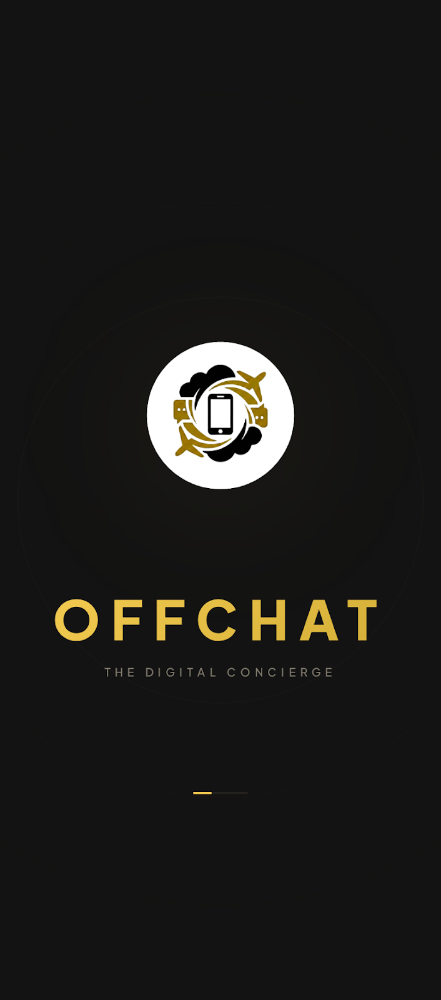
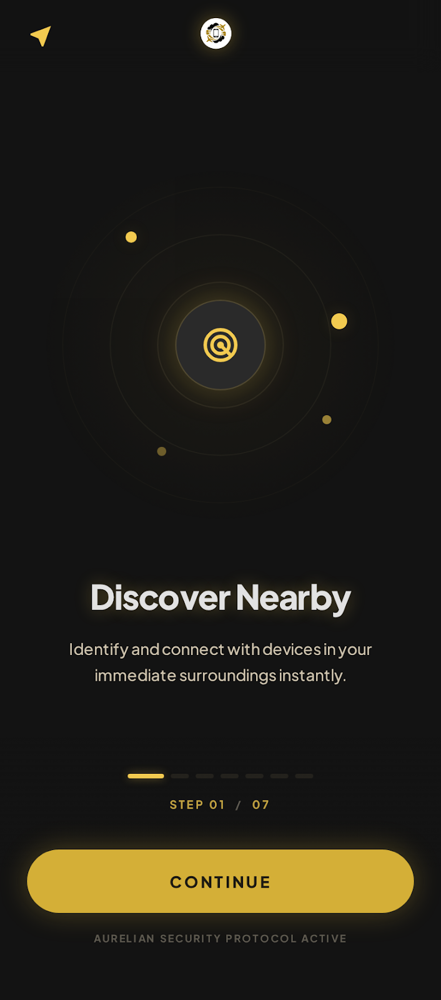
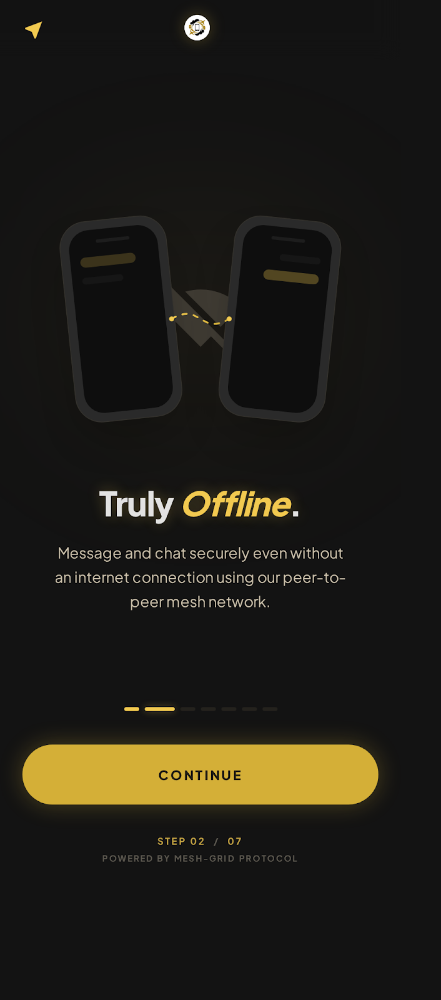
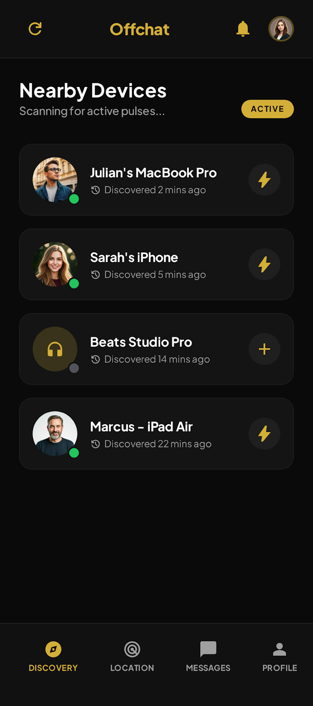
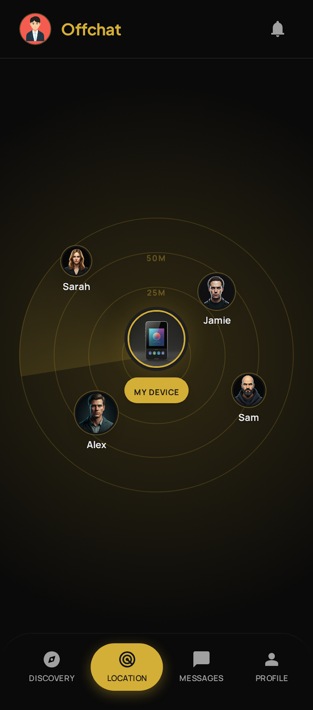
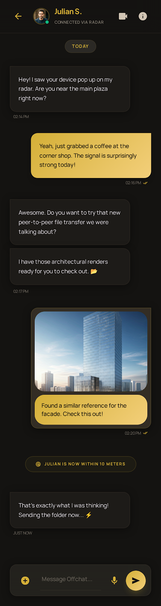
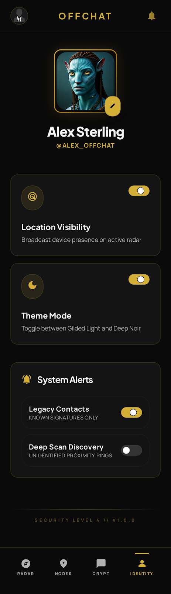

Off Chat is an offline-first, peer-to-peer communication platform built with Flutter. It utilizes Bluetooth Low Energy (BLE) to enable device discovery, relative location tracking (Radar), and secure messaging without any reliance on internet or cellular connectivity.
📱 User Experience Journey
Explore the premium "Aurelian Noir" interface through the application's key lifecycle steps.

Entry
The Arrival
Users are greeted by the minimalist splash screen, establishing the high-end digital concierge aesthetic immediately.

Step 01
Node Identification
The onboarding process begins by explaining the decentralized nature of the network. Every device acts as a secure Node.

Step 02
Offline Security
Communication occurs directly between devices. No servers, no logs, no internet required.

The Hub
Node Discovery
The main interface scans for nearby active pulses. Discovered users appear with their custom aliases and proximity status.

Spatial Tracking
The Radar
A custom-built visualization engine combines GPS and compass data to paint relative peer positions in real-time.

Communication
Secure Messaging
Direct peer-to-peer GATT communication with automated chunking and reassembly protocols for text and media.

Management
Identity & Settings
Manage your Node's appearance, toggle spatial visibility, and configure notification alerts.
🛰 The Off-Chat Protocol
Hybrid Discovery Strategy
To overcome standard BLE advertisement limits (31 bytes) and iOS background restrictions, this project implements a specialized binary payload strategy:
1. The 13-Byte Payload
Essential metadata is packed into a compact structure:
Byte 0: Flags (Platform, Location Visibility)
Bytes 1-4: Profile Hash (CRC32 of username/avatar)
Bytes 5-8: Latitude (Float32)
Bytes 9-12: Longitude (Float32)
2. Connection Logic
Primary Advertisement: Broadcasts only the Service UUID and essential flags to minimize packet size and maximize discovery reliability (especially for iOS background).
Scan Response: The 13-byte custom metadata is moved to the Scan Response packet. Local Name is disabled.
Background (iOS): When Scan Response data is stripped by the OS, the app initiates a silent GATT connection to read the "Identity Characteristic."
Simulates BLE radio signals between multiple Android emulators, allowing local verification of discovery and GATT sync logic.
CI/CD Pipeline
GitHub Actions automatically builds release APKs and App Bundles on every push to the master branch.
Off Chat: Decentralizovaný Digitální Concierge
Bakalářská práce | ČVUT FEL, Praha
Off Chat je offline peer-to-peer komunikační platforma postavená na Flutteru. Využívá Bluetooth Low Energy (BLE) pro objevování zařízení, sledování relativní polohy (Radar) a bezpečnou výměnu zpráv bez závislosti na internetu nebo mobilním signálu.
📱 Uživatelská Cesta
Prohlédněte si prémiové rozhraní "Aurelian Noir" skrze klíčové kroky životního cyklu aplikace.
Vstup
První Dojem
Uživatelé jsou přivítáni minimalistickou úvodní obrazovkou, která okamžitě definuje estetiku digitálního concierge.
Krok 01
Identifikace Uzlu
Proces nastavení začíná vysvětlením decentralizované povahy sítě. Každé zařízení funguje jako zabezpečený uzel.
Krok 02
Offline Bezpečnost
Komunikace probíhá přímo mezi zařízeními. Žádné servery, žádné záznamy, žádný internet.
Centrum
Objevování Uzlů
Hlavní rozhraní skenuje aktivní pulzy v okolí. Objevení uživatelé se zobrazí s vlastními přezdívkami a stavem blízkosti.
Prostorové Sledování
Radar
Vlastní vizualizační engine kombinuje GPS a kompas pro vykreslení relativní polohy ostatních v reálném čase.
Komunikace
Zabezpečené Zprávy
Přímá peer-to-peer komunikace přes GATT s automatickým dělením a skládáním textu a médií.
Správa
Identita a Nastavení
Spravujte vzhled svého uzlu, přepínejte prostorovou viditelnost a konfigurujte upozornění.
🛰 Protokol Off-Chat
Hybridní Strategie Objevování
K překonání limitů BLE reklamy (31 bajtů) a omezení iOS na pozadí projekt implementuje specializovanou binární strategii:
1. 13-Bajtový Payload
Klíčová metadata jsou zabalena do kompaktní struktury:
Byte 0: Příznaky (Platforma, Viditelnost polohy)
Bytes 1-4: Hash profilu (CRC32 jména a avataru)
Bytes 5-8: Zeměpisná šířka (Float32)
Bytes 9-12: Zeměpisná délka (Float32)
2. Logika Připojení
Popředí: Data jsou vysílána přes pakety Scan Response pro okamžitou aktualizaci.
Pozadí: Na iOS aplikace zahájí tiché GATT připojení pro přečtení identity, pokud jsou pakety ořezány operačním systémem.